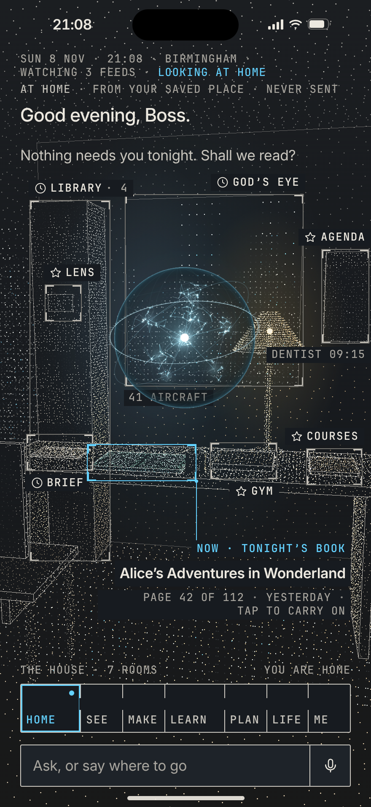
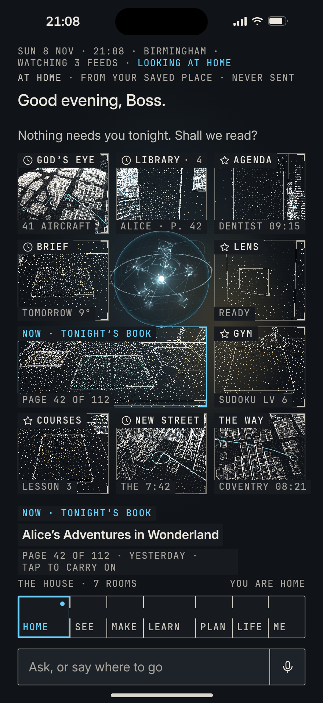
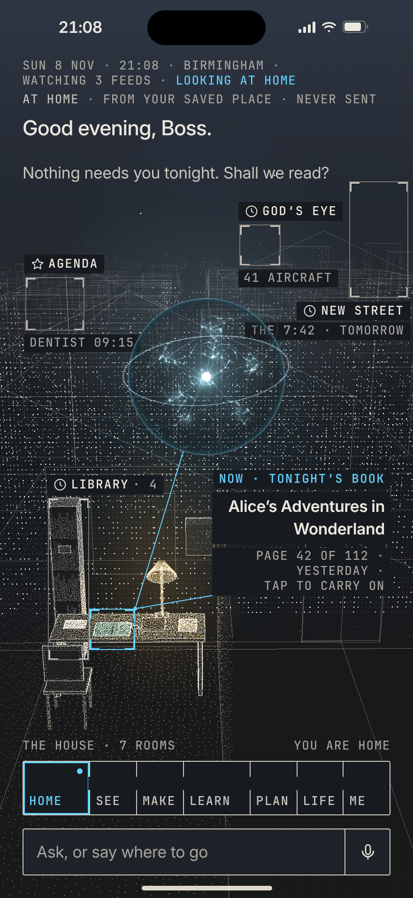

BRIEF-HUD-MOCKS-3, 8 Nov. His words: “i’m starting to reconsider the like room thing … maybe it’s missing something or we could go with something along those lines or move sideways or even move upwards.” Three Homes, evening, at home, the same facts in each (the stamp, the where-line, Now = tonight’s book, the seven rooms, the ask line), so only the world differs. 440 × 956 at 2×, the system’s tokens and marks, the scan as points, the real orb. The README has the finding rule for each, my pick, and the three questions.

The same room, with what it was missing found and added: a shot. The camera comes into the room, low and three-quarter from his side of the desk; the lamp becomes a thing that lights it (a warm pool on the desk and the brief, the shelf falling away, the city cool through the window at a slant); the orb hangs over the desk and lights it; his chair and his mug are where he left them.

Not a room: the Machine’s own view, which is every view at once. Home is the wall of what it is watching tonight: ten live cameras in the same scan (the desk and the book in focus, the shelf, the calendar, the brief, the board, the notebook, the lens, the city from above, the station, the way), the orb the eye in the middle with its line of sight on the one it is looking at. Every tile is one tap.

A bigger idea than a room: one frame from the sky to his desk. Aircraft over the city, the city as hairline blocks lit with windows, the station among the towers, his street with its lamps, his house with the roof lifted and the room lit inside it, the book lit on the desk; the orb over the city, its line of sight dropping to the book. The room is the deepest zoom of a world that goes all the way up.